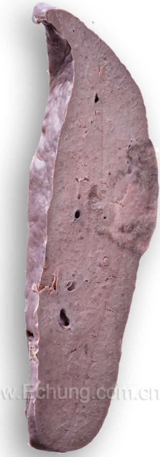
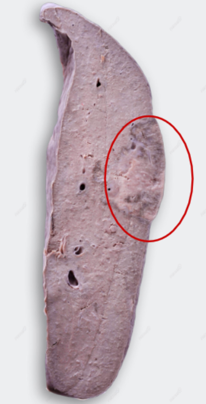
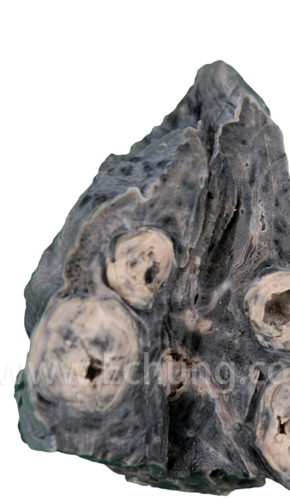
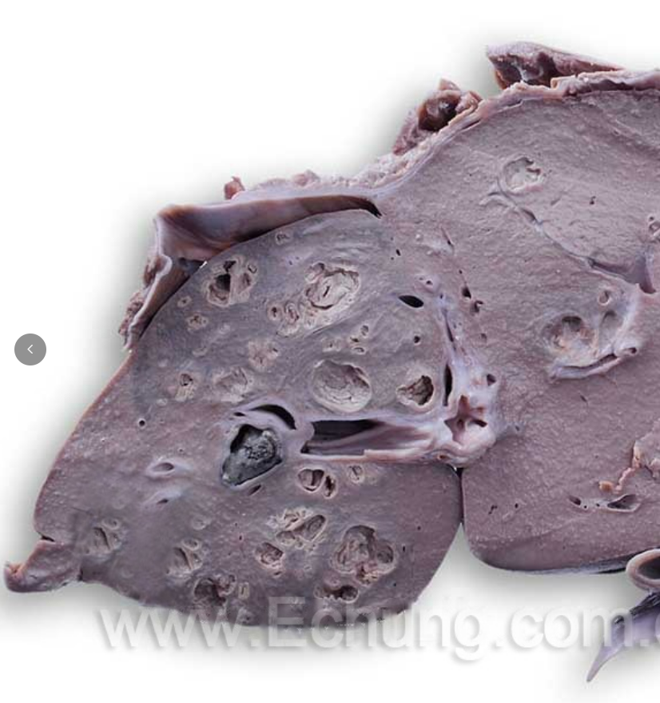
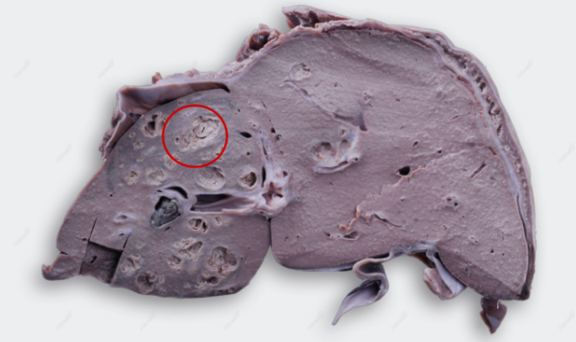
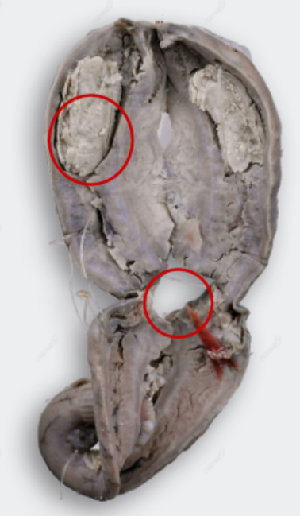
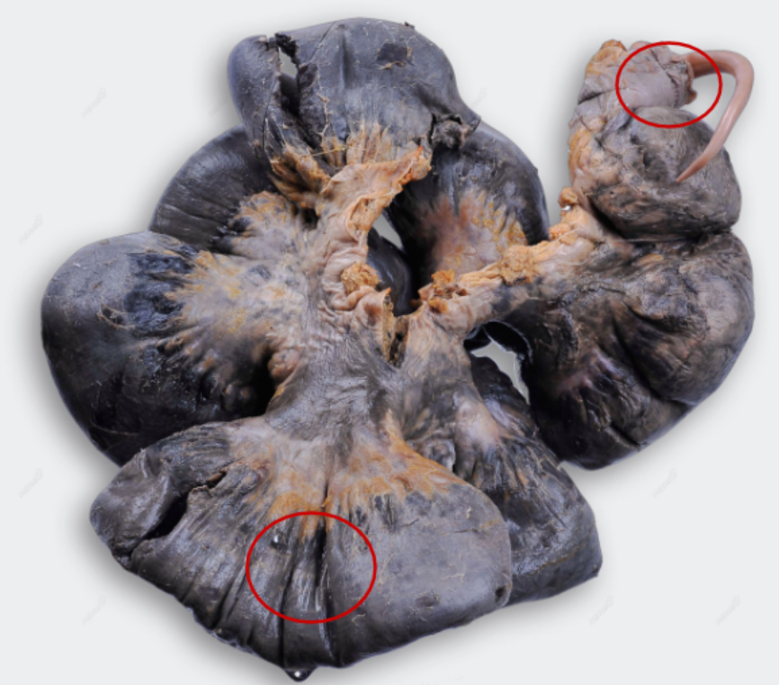
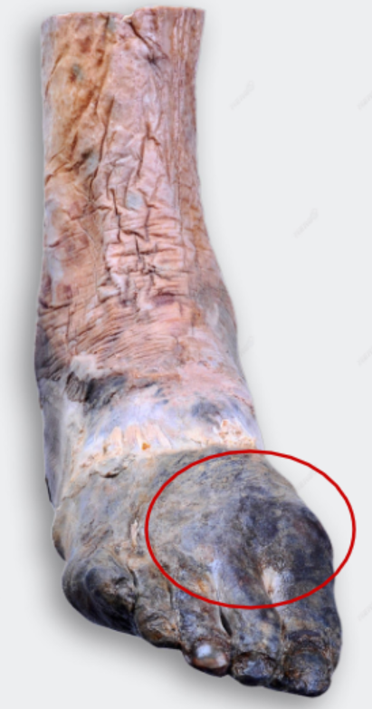
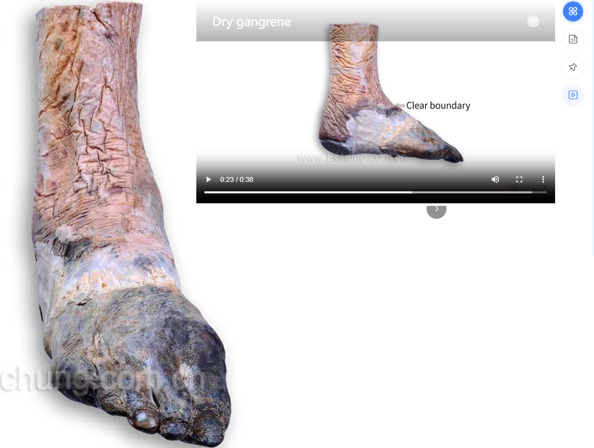

Seven gross specimens and three key slides, in the order the bench teaches
them: the three necrosis patterns first, then the two gangrenes, then repair.
Necrosis is the morphologic pattern of cell death in living tissue,
following irreversible injury: the cell's own hydrolytic enzymes and those of infiltrating
leukocytes progressively digest it, and its contents leak out, triggering local
inflammation.
Three morphologic patterns cover almost every necrosis you will see on a bench or a
board exam. All three follow the same two-step mechanism, denaturation of structural proteins and
enzymes versus enzymatic digestion of the dead cell, in different proportions.
| Pattern | Mechanism | Looks like | Classic setting |
|---|---|---|---|
| Coagulative | Protein denaturation dominates; enzymatic digestion is delayed, so the cell's outline survives | Firm, pale, dry; architecture (a "ghost" of the tissue) preserved for days | Infarction in most solid organs (heart, kidney, spleen), except the brain |
| Caseous | A distinct variant of coagulative necrosis: the dead cells fully lose their outline, leaving a friable, cheese-like debris | Soft, granular, yellow-white, "cheese-like"; often walled off by granulomatous inflammation | Tuberculosis, classically |
| Liquefactive | Enzymatic digestion dominates; hydrolytic enzymes from the dead cells or from neutrophils digest the tissue completely | Soft, liquid, viscous fluid, forming a cavity | Bacterial infection (abscess); hypoxic death in the brain |
Caseous necrosis is not a fourth, separate category: it is coagulative necrosis carried further,
distinguished from ordinary coagulative necrosis by the complete loss of cellular and tissue
outline (grossly and microscopically) rather than the preserved "ghost" architecture typical of a
plain infarct.

Gross The cut surface of the spleen shows a triangular, pale, dry
necrotic lesion with a slightly elevated capsule; the base is oriented toward the capsule; the
periphery of the necrotic lesion is a congested, hemorrhagic zone.


Gross The lung tissue shows two spherical lesions, grayish-yellow;
the cheese-like necrotic material and carbon deposits form a layered, concentric structure. Some of
the caseous material has fallen away into a cavity, surrounded by fibrous tissue.
Mycobacterium tuberculosis triggers a cell-mediated (delayed-type hypersensitivity) immune
response: activated macrophages transform into epithelioid cells and fuse into Langhans' giant
cells, walling the organism off in a granuloma. At the centre of that granuloma, the combination of
mycobacterial lipid content and the immune reaction produces necrotic debris that is friable and
grossly resembles soft, crumbly cheese, hence "caseous," from the Latin caseus.

Gross Several round cavities of different sizes are seen on the cut
surface of the liver, larger ones about 1 × 0.5 cm and smaller ones about 0.3 cm across; the
abscess wall is thick, the cavity contains yellowish-white necrotic material (pus), and the
surrounding liver tissue is dark red.

Gangrene is not a distinct type of necrosis; it is a clinical term for
coagulative necrosis of an extremity or a hollow viscus that has become extensive enough to be
grossly obvious, modified by whether bacterial infection has been superimposed.
| Feature | Dry gangrene | Wet gangrene |
|---|---|---|
| Underlying process | Coagulative necrosis from arterial occlusion (ischemia) alone | Coagulative necrosis plus superimposed bacterial infection |
| Gross appearance | Dry, shrunken, dark brown to black, mummified; clear demarcation from viable tissue | Swollen, wet, foul-smelling; boundary with viable tissue unclear; rapidly progressive |
| Mechanism of colour | Loss of blood supply and gradual desiccation | Hemoglobin breakdown products plus bacterial putrefaction |
| Typical site | Lower extremity in peripheral vascular disease | Bowel, appendix; anywhere ischemic tissue meets the gut's bacterial flora |

Gross The appendix is swollen and thickened; the serosal surface is
scattered with grayish-yellow inflammatory exudate and shows vascular dilation and congestion. On
section, the wall is thickened, and a fecalith is present in the lumen. In severely affected areas
the wall is dark black with focal perforation.
A perforated, dark, foul appendix is the textbook picture of wet gangrene specifically because
the appendiceal lumen is already colonized by gut flora: once the wall becomes ischemic (usually
from luminal obstruction by a fecalith, raising intraluminal pressure above capillary perfusion
pressure), those bacteria invade dead tissue immediately, there is no "dry" phase to observe.

Gross The affected intestinal segment is dark black; the wall is
thickened by congestion, edema, and hemorrhage; the boundary with normal bowel is unclear, and the
lesion area has lost its normal luster. A roundworm (Ascaris lumbricoides) is visible at one
end of the segment.
Bowel has a dual, anastomosing blood supply and loose, distensible tissue, so venous outflow
obstruction (here from a mass of roundworms causing intestinal obstruction and secondary
strangulation) lets blood continue pooling into the segment even as outflow fails, producing the
red-black, blood-engorged appearance of a hemorrhagic (red) infarct, unlike the pale, bloodless
infarct of the spleen.

Gross Necrosis occurs distal to the ankle joint. The necrotic area is
dirty grayish-black, dry, hard, and clearly demarcated from the normal, viable tissue
proximally.

Dry gangrene can convert to wet gangrene if bacteria secondarily invade the desiccated tissue
(common if the patient is diabetic, since hyperglycemia impairs neutrophil function); the
distinction is about infection, not about which artery was occluded.